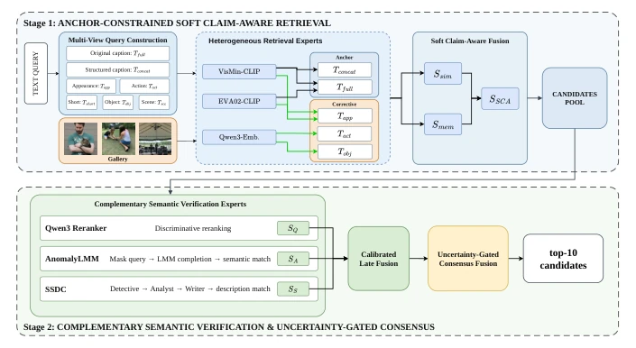

This paper adds a "luxury package" to Sim2Real text retrieval. FaLCon's core idea is "coarse-to-fine", using global anchors to ensure recall, using fine-grained facets for correction, and finally implementing an "uncertainty-gated consensus" to reconcile the opinions of three experts. Although the architecture looks quite fancy, essentially it is still a score-level weighted average; the so-called "consensus" does not truly exchange textual arguments like multi-agent debate, but only adjusts weights based on uncertainty. For difficult scenarios like Sim2Real, limiting expensive MLLM inference to a Top-10 candidate pool is indeed a pragmatic choice, avoiding computational explosion. However, relying on LLM for Query Decomposition may also be a hidden cost during the inference stage, and "soft claim awareness" sounds quite esoteric, it is actually weighted fusion. Overall, it has strong engineering feasibility, but theoretical innovation is slightly conservative, representing a typical example of "stacking modules on existing VLMs"; although the leaderboard performance is good, whether it can generalize to other complex scenarios needs observation, and the reliance on synthetic data may limit robustness in the real world.
Text-Based Person Anomaly Search is very useful in security surveillance, but the PAB benchmark poses a severe Sim2Real challenge [37]. Existing methods mainly rely on global image-text embeddings, easily ignoring subtle action or object interaction differences, making it difficult to distinguish among visually similar candidates [1]. More fatally, directly applying Multimodal Large Language Models (MLLM) to the entire Gallery incurs excessive computational cost and is impractical [18]. Furthermore, relying solely on appearance matching often fails to capture anomalous behaviors, while pose signals are prone to degradation under domain shift [37]. Therefore, a coarse-to-fine framework is needed that can maintain high recall while limiting expensive semantic inference to a small number of candidates, to balance performance and efficiency. Existing work such as AnomalyLMM attempts generative verification but fails to effectively solve the computational bottleneck in the retrieval stage.
The method is divided into two stages. The first stage is anchor-constrained soft claim-aware retrieval. Queries are decomposed into complete descriptions, structured concatenations, and multiple semantic facets (appearance, action, object, scene). Global captions serve as anchors (Anchor), ensuring the candidate pool is not contaminated by isolated facets; fine-grained facets serve as correction signals. Top-K candidate pools are generated through robust score calibration and soft claim fusion. The second stage is complementary semantic verification and uncertainty-gated consensus. Three experts run in parallel on the Top-10 candidate pool: Qwen3 re-ranker, AnomalyLMM-style Cloze verification (mask completion), SSDC-inspired structured verification (detective-analyst-writer). Finally, the uncertainty gating module calculates the gating value g(q) based on entropy, Top-2 margin, and expert divergence, adaptively mixing static fusion and geometric consensus, avoiding wasting computation on certain queries and enhancing robustness on ambiguous queries. This design avoids additional multimodal forward propagation, utilizing only calculated scores.
Tested on the PAB benchmark, training set is 1 million synthetic image pairs, test set is real images. Metrics include mAP@10, R@1, R@5. The soft claim retrieval baseline reaches 86.44% mAP@10. After adding three verification modules, static fusion improves to 95.18%, uncertainty-gated consensus further reaches 95.41% mAP@10, R@1 is 94.44%. Ablation studies show that the anchor-constrained design improves by about 1.5 mAP compared to no anchor, and adaptive consensus outperforms fixed-weight fusion. Results prove that limiting expensive inference to a small candidate pool is effective. Compared to other challenge solutions, this method performs more robustly under Sim2Real settings and requires no additional test-side calibration.
其他图片Other Figures

Fig. 2: Overview of the our framework. Anchor-constrained multi-view retrieval constructs a shared top-K candidate pool. Three rerankers refine the candidates, and uncertainty-gated consensus combines their scores to produce the final ranking.